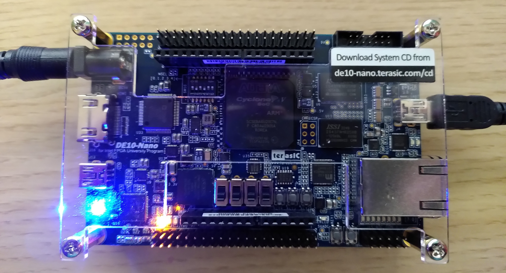
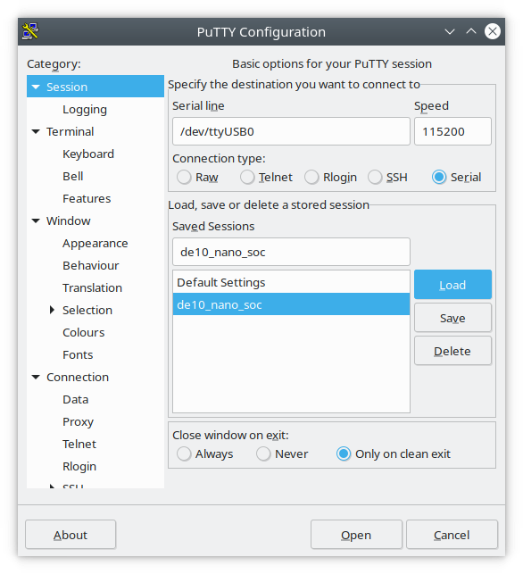
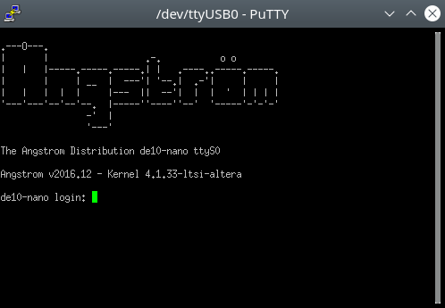

Today I want to show you, how to connect to the DE10-nano board, the successor of the DE0-nano board. It is a bit bigger, costs nearly 300 bucks, but also supports Linux out-of-the-box. There is an Angstrom Linux installed on the SD-card.
To connect to the board via the UART interface, power-up the board with the wall-wart,enter the sd-card to start the linux booting, and finally connect the micro-b usb cable (like shown below) with the PC.

Then go to the console and enter (as root)
# dmesg | grep FTDIif the driver ideally is already installed you should get back something like:
[ 6352.585966] usb 3-4: Manufacturer: FTDI
[ 6352.648922] usbserial: USB Serial support registered for FTDI USB Serial Device
[ 6352.648961] ftdi_sio 3-4:1.0: FTDI USB Serial Device converter detected
[ 6352.656051] usb 3-4: FTDI USB Serial Device converter now attached to ttyUSB0Now, you only need to change user permissions, again as root (you need to do this after every boot / connection):
# chmod a+rw /dev/ttyUSB0Then, lastly, you need to install putty which on Linux is as simple as on Windows:
# apt-get install -y puttyThen open putty
$ puttyenter the device /dev/ttyUSB0, like shown in the ftdi output above, enter the baud-speed of 115200 and then save the configuration.

Press 'open' and ideally it should connect to the board. If no warning appears,press enter, and you get belows picture:

enter root as login and enter as password.
To be continued…